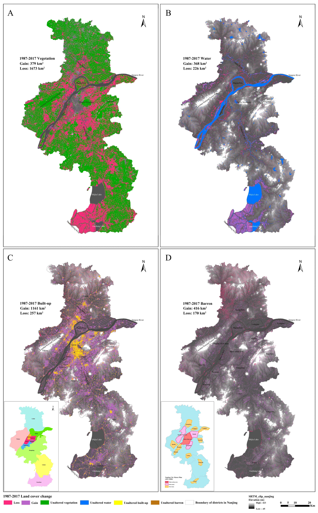

6 Week 5: Google Earth Engine
6.1 Summary
Google Earth Engine (GEE) is another geospatial analysis platform for loading, processing, and analysing satellite imagery. GEE is quite different from other geospatial analysis platform. GEE itself contains a gallery of satellite imagery, imageries are stored on the server where users can directly load the imagery onlin without downloading. The big difference to another geospatial analysis tools e.g., SNAP, R Studio, or QGIS is that GEE is a server-side cloud-based machine. GEE runs on Google cloud-based server rather than local client-side machine; therefore, its performance is not impacted by the performance of local machines. In other words, the performance on GEE is not restricted by the processor speed, RAM, and storage capability. GEE can process large datasets at a very high speed using the data processors on the server-side. Another difference is that GEE uses different programming language, here we us JavaScript rather than Python. The advantage of using JavaScript is that the user (we) can see the output codes immediately after execution. Satellite imagery can be resampled into different scales, usually refers to down sampling or reducing images. Image can be reduced by region or neighbourhood.

6.1.1 Terms
Raster: (satellite) image with colour bands
Vector: feature with geometry and attributes
Scale: resolution, determined when generating the final output product.
Can down sample the data to a lower resolution to satisfy users’ needs.
Have to be resampled to get different scales.
The resampling in each scale is taking the properties from the “parent” pixel, the resampled pixel will have the same properties as the parent pixel but just with different scale.
Resolutions: spatial, temporal, spectral.
6.2 Applications
GEE is widely used in remote sensing, especially in natural resource management. The creation of time lapse series even provides a holistic approach to the monitoring of environmental changes (Gorelick et al. 2017). GEE is usually used for time-series analysis for environmental studies which include (Tamiminia et al. 2020):
- Forest mapping
- Drought monitoring
- Land use/ land cover
- Fire
- Surface water detection
- Paddy rice
- Flood
- Snow
- Mine mapping
- Disease risk mapping
The most common usage of GEE is to conduct NDVI analysis and mapping the land cover change using Landsat/ satellite imagery. One of the case study is over the lower Yangtze River in Nanjing, China, where the authors uses the public data archive over the GGE platform for the detection of long-term spatial-temporal land-cover change (Zhang and Zhang 2020). The filter the image of their study site using the same geographical boundaries and desired date (time) for data acquisition and processing. The advantage of using GEE is its ability to regenerate results accordingly, for each of the satellite images, using the algorithm. By then, the users do not have to re-execute the code every time by themselves when they have to process images having the same geometry. The algorithm also provides a speedy way for result replication that enhances the efficiency of data processing.

However, there are some limitations of GEE. GEE-based image analysis is constrained by the existing tools within the GEE API, GEE algorithms is unique on the Google servers (Amani et al. 2020). This means codes over GEE are not reproducible outside GEE platforms. In additions, atmospheric correction algorithms are not advances enough to reduce possible biases or errors (Amani et al. 2020). This means the reliability of the finaly products form GEE still remain uncertain when comparing to other platforms. If we considered all of these limitations to the above case study, the case study and findings are only reproducible within GEE platform by using the same tools. Atmospheric correction also hinders the NDVI analysis through the alteration of the ToA.
6.3 Reflections
GEE is an interesting platform for remote sensing, it is totally different from what I have learnt throughout the past few months or in my undergraduate degree. I think GEE is quite useful when comparing changes through time e.g., when conducting a multi-temporal spatial analysis as the GEE platform has all of the imagery (data sets) ready in its gallery, and we (the users) just have to filter them accordingly (our dates of interests and specific location) then it’s ready for data processing! I have had a good user-experience with GEE so far, although I ran into troubles sometimes. The wide range of products available on the GEE gallery also provides handy and extensive resources for users ready for analysis e.g., from Landsat/ Sentinel to spatial distribution of pollutants e.g., carbon monoxide and ozone. In addition to that, we don’t have to downloads multiple data sets, it saves a lot of time, efforts, and memory space for data loading. I found it quite user-friendly, it is convenient to use. Overall, I would say GEE is convenient to use and having a high efficiency in data processing.